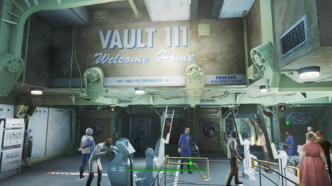
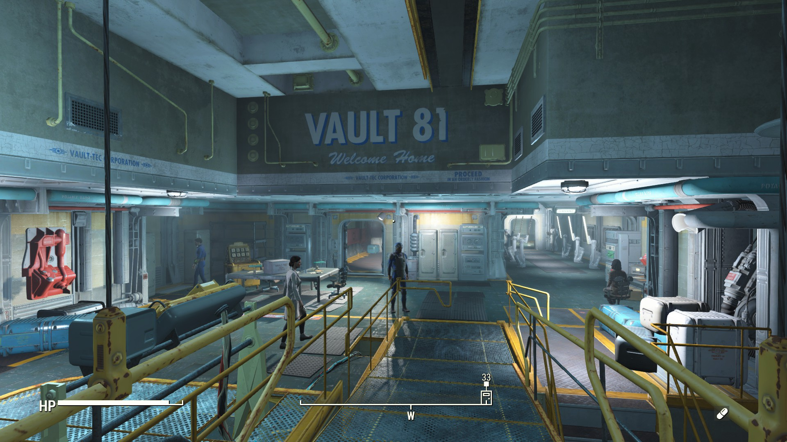
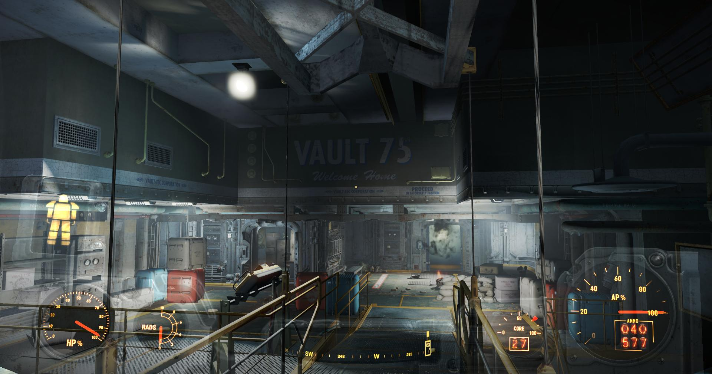
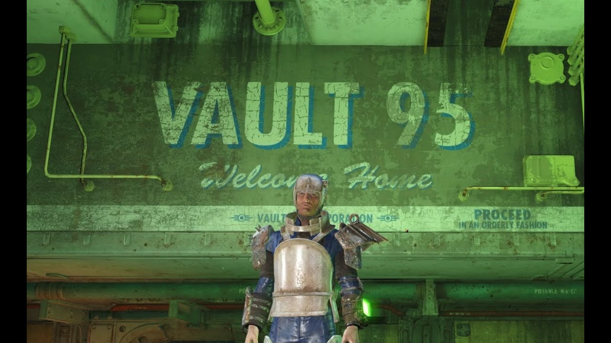

Vaults 
Vault 111
Unlike other vaults, the entrance to Vault 111 not only has an atypical pneumatic hull but also acts as a hatch which gives way to an interior elevator. The vault is significantly smaller as compared to other Vault-Tec vaults, due to the nature of the experiment.
Vault 81
Vault 81 is divided into two main areas: the regular vault, where the residents live, and the secret observation area, where the scientific team used to observe the vault dwellers and conduct research.
Vault 75
The entrance is a standard vault entrance, accessible through the Malden School basement door from the wasteland. An elevator will take the player character down into the actual vault. Entering the elevator will activate the quest Vault 75.
Vault 95
Vault 95 was designed to house a maximum of 72 people as shown in a blueprint behind the overseer's desk showing the layout of the entire vault.